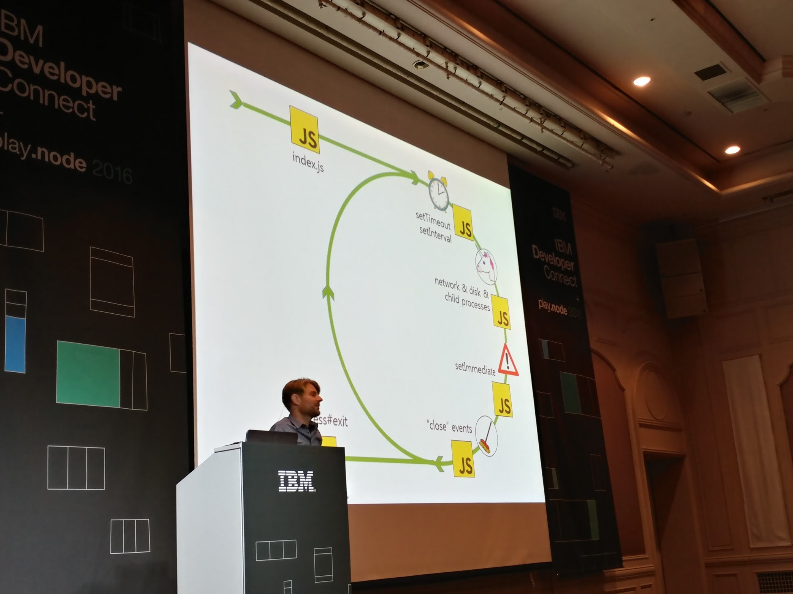
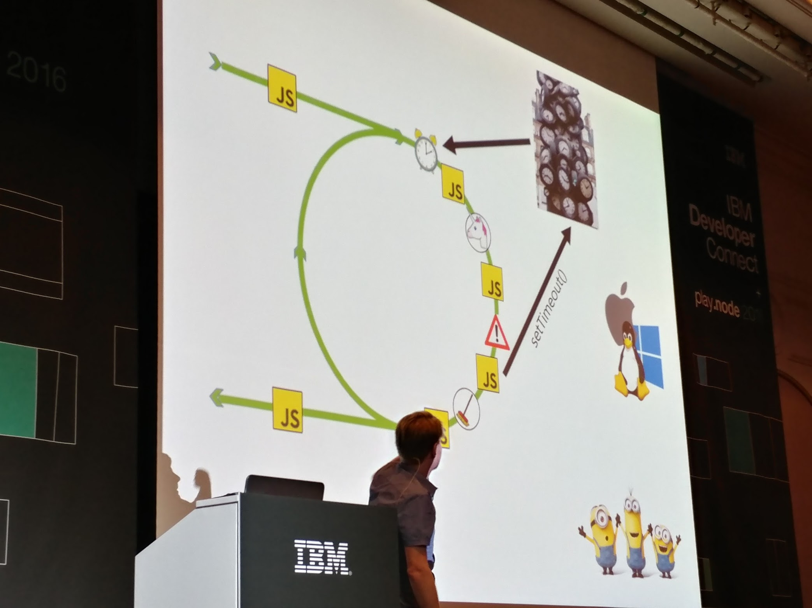
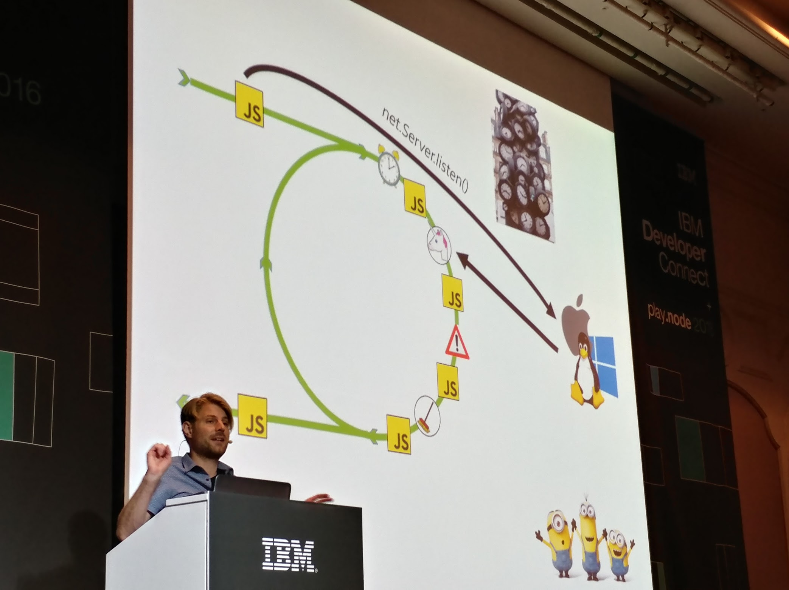
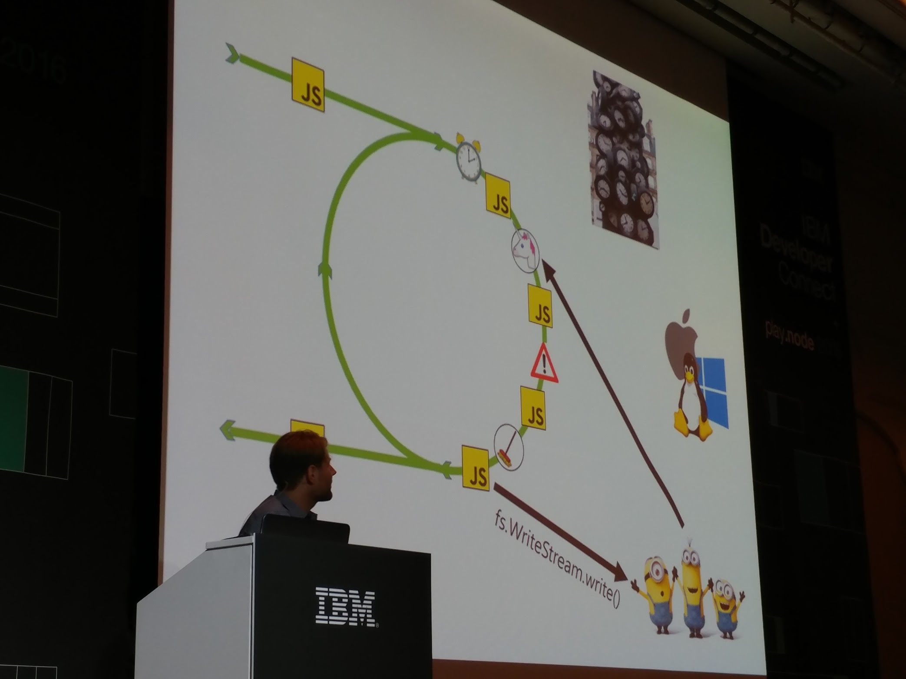
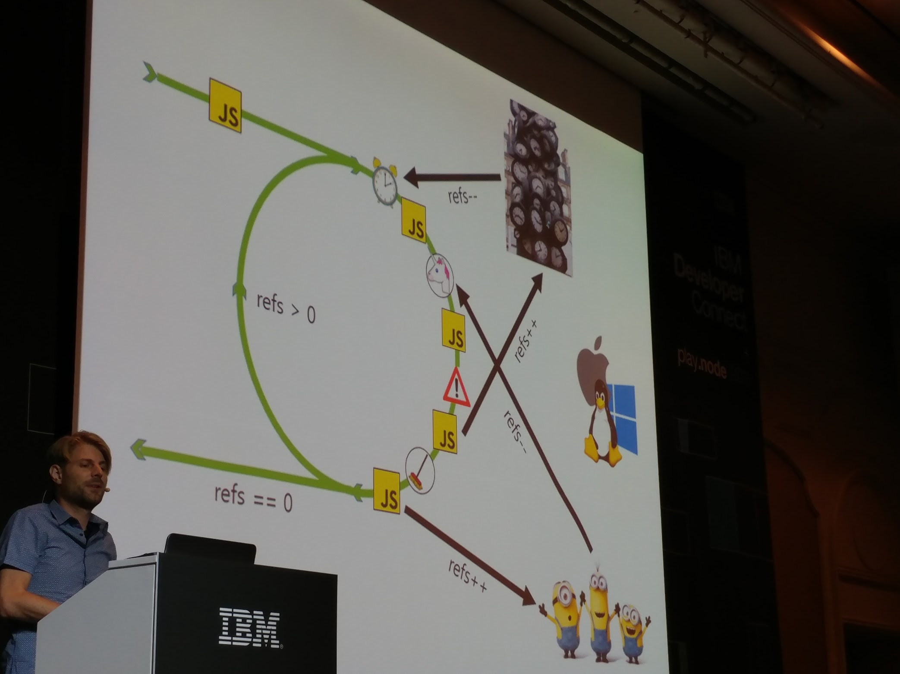
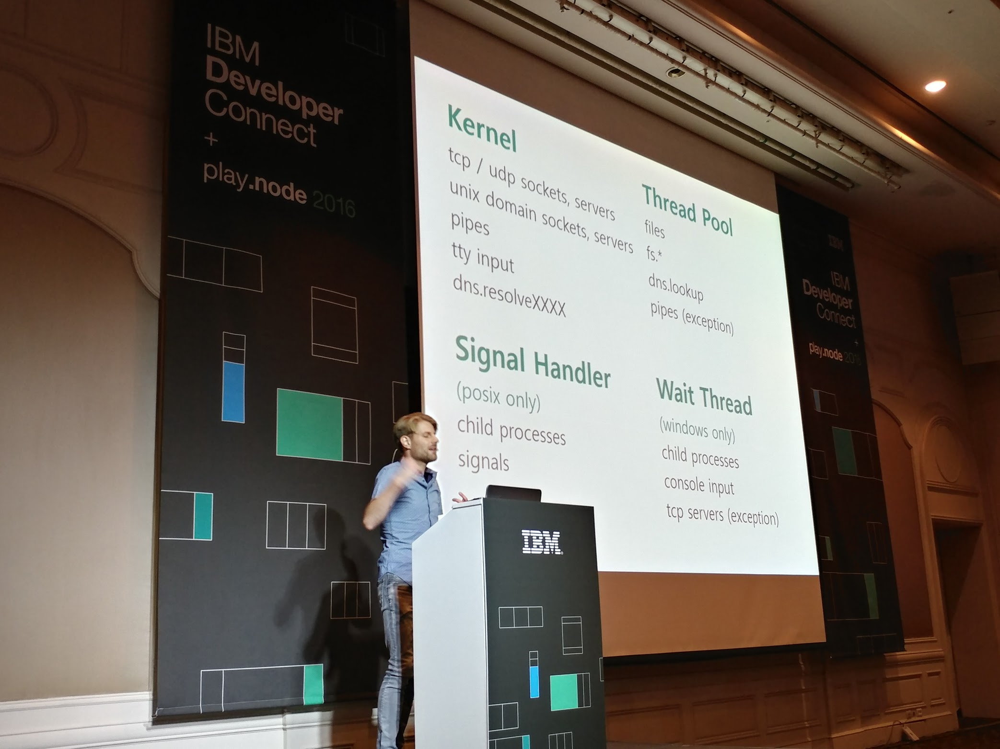
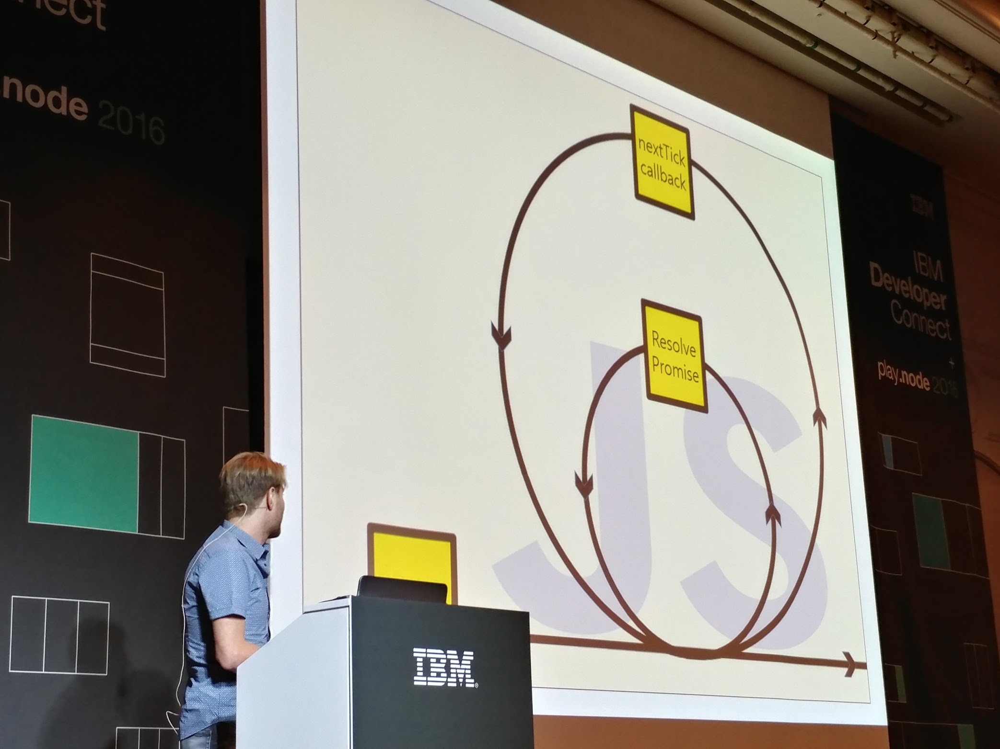

강연후기 1
javascrpt everywhere - 하나의 프로그래밍 언어로 모바일부터 로봇까지
#소개 JavaScript Everywhere - 하나의 프로그래밍 언어로 천하통일을 꿈꾸는 메이커
JavaScript 와 Node.JS 만으로 IoT 제작/교육 플랫폼을 만들고, 로봇을 위한 임베디드도 Node.JS 로 제작한 사례를 공유합니다.
MongoDB 와 Elasticsearch 채용으로, 모바일 부터 로봇, 그리고 데이터 분석 까지 전 영역에 JavaScript 를 적용함으로써 얻은 교훈을 이야기 합니다.
박종건 | Circulus 대표/수원대학교 조교수
게임을 너무 좋아하여 휴학하고 다음 게임에 입사 하였다가, 직장이 아닌 직업을 찾기위해 IT개발을 위해 삼성SDS 정보기술연구소로 입사, IoT 기반 공급망/물류 시스템및 데이터 시각화 업무를 담당했습니다. 삼성 근무 시 내가 해야할 일은 남들도 누구나 SW+HW 를 이용하여 만들 수 있게 하자는 목적으로, 2013년 Circulus 커뮤니티를 시작, 뜻을 펼치기 위해 2016년 로봇 기반 에듀테크 스타트업 Circulus 를 시작하였습니다.
주제
- why? nodejs
- how?
- what
발표자
- rippertnt@gmail.com
- http://www.circul.us
Why - Javascript
One Language - Multi platform
과거 기계어 -> 저급언어 -> 하이레벨 ==> 언어의 파편화
- desktop : C#
- mobile: Object-C
- web: javascripot
- server : java
- embeded : c/c++
- database : sql
analysis : etc
-
- 하나의 언어를 사용하던 시대에서
- 바벨탑의 저로 언어가 다양해짐.
자바스크립크 랭크
Javascript everywhere
모바일부터 로봇까지 가장 폭넓게 활용할 수 있는 언어
개발자 -> 메이커의 시대
기존 sw개발에서, HW + SW 결합하고 아이디어를 개발 SW개발자에서 융복합 메이커로의 진화
Opensource Hardware
- 저렴한 마이크로 컨트롤러/컴퓨터의 등장으로 H/W 영역도 실패가 가능해짐.(출시하면 납땜다시하지 않는이상 변경 불가였던 시절이 있었음 - 지금은 H/W rewrite 가능해짐)
- CHIP => 9$ 컴퓨터
- 3D 프린터
Make Movement
기존의 DIY 영역에서 ICT 기술이 접목. Maker Faire
S/W + H/W + Service 결합되어 다양한 아이디어들이 실제로 구현
Arduino vs Raspberry Pi
Raspberry pi - microcomputer (s/w)linux + javascript (h/w) gpio ==> javascript로 개발하고 gpio와 연결된 외부 디바이스를 제어(ex- 모터, led)
Circulus
=> 발표자 회사 및 서비스 소개 자세한 내용은 슬라이드 참조.
Program or be programmed
Education/Making with circulus
Circulus Iot Platform
javaScript in Circulus
| Web | Server | IoT platform | Database | win pc | mobile | wearable | analysis | embeded | linux pc |
|---|---|---|---|---|---|---|---|---|---|
| javascript | node | node | mongodb | nw.js | cordova | tizen | elastic serach | nodejs | nw.js |
How - Robotics (Intelligent Bot)
-> 발표자 회사 소개 자료..
강연후기 2
How the Node.js event loop works
Node.js프로그래머들은 비동기 I/O와 event loop에 대해 너무나 익숙합니다. 하지만 event loop가 실제 어떻게 작동되는지 아는 사람은 많지 않습니다. node가 Threads를 쓰는지 안쓰는지? Callback은 어디에서 오는지? nextTick을 쓸지 setImmediate을 쓸지? node 저변에는 "libuv"라이브러리가 여러 플랫폼 간의 이 모든 마법을 가능하게 합니다. HTTP 요청 처리 여부, 파일의 읽기나 타이머 처리까지 libuv 가 이 모든 것을 가능하게 합니다. 이 세션에서 libuv아키텍트인 Bert Belder는 event loop의 작동 방식, libuv가 어떻게 비동기화 I/O를 가능하게 하는지, 그리고 당신의 Node.js코드를 최대한 활용할 수 있도록 어떻게 돕는지에 대해 이해하기 쉽게 설명할 것입니다.
Bert Belder | Node.js core developer / Strongloop founder, IBM
Bert Belder는 2011년부터 Node.js 코어 컨트리뷰터로, 가장 오래된 node 메인테이너이자 지금도 활발하게 활동하고 있습니다. 2013년에 Bert는 동료 Ben Noordhuis와 함께 StrongLoop을 설립했습니다. 오픈 소스에는 libuv를 윈도우에 포팅하는 작업을 기점으로 첫 발을 들였으며, 그 이후로 지금까지 node 커뮤니티의 리더로 활동하고 있습니다.
How the node.js event loop works
=> 사전 지식으로 커널에 대해 알고 있어야 이해가 감.
Bert Belder
Node.js core developer / Strongloop founder, IBM
구글 이미지 검색 node.js event loop => 모두 잘못되었다고 말함;; 임팩트를 줌!!
네트워킹 프로그래밍을 할때 최소 3번은 blocking이 생긴다.
(psedo code로 c 코드를 보여줌) - I/O 작업시에 블럭킹 발생 - connect method - write method - read method
==> 그러나 컴퓨터 H/W는 비동기임. ==> 보여준 코드는 절차적이면서 스테이트먼트가 끝나려면 응답을 기다리는 blocking 구조임.
H/W 비동기 참조 PIO -> DMA
cpu – command —> <–interrupt — disk <–data—> ram
nodejs eventloop
    
유니콘 함수 설명.
function unicorn { //Put the main thread to sleep // Wake u when: * there ar events ffrom the kernel to process * a thread pool thread has completed an operation * the next timer goes off
nonblocking o/s main method linux - epoll_wait ios- kevent windows-GetQueuedCompletionStatusEx()
}
Non-blocking I/O
- Try an I/O operation(rad, write)
- If it couldn’t be done immediately, EAGAIN or EWOULDBLCIK is returned
- Call epoll() / kqueue() to knwo when you should try again
Overlapped I/O 1. send a command to the kernel(WSARecv, WSASend) 2. Call GetQueuedCompletionStatusEx() later to get the result.
node에서 커널관심사

node loop tick(??)
 원래는 nextTick/callback만 있었는데 Resolve/Promise
발표자 트위터 @scisauresus
강연후기 3
Electron을 이용한 모바일 테스트 자동화 소프트웨어 개발
Electron을 이용한 모바일 테스트 자동화 소프트웨어 개발
Node기반의 Electron을 이용하여 모바일 앱 테스트 자동화 소프트웨어 개발 사례를 소개하고, Node가 가진 인프라를(NPM) 프론트-엔드 기술에 접목시켰을 때의 효과와, 달라지는 것은 무엇인지에 대하여 알아보는 시간을 가져봅시다.
경준호 | 알서포트
자바스크립트를 매우 사랑하는 10년차 프론트-엔드 개발자입니다. Firejune이라는 닉으로 활동 중이며, 순수 미술을 전공했고 웹 디자인을 시작으로 IT업계에 발을 들여 놓았다가 안타깝게도 개발자가 되고 말았습니다…
Agenda
- Test Atutomationwith ATDD
- node based desktop application
- introduction to project psyclone
- test cloud service with psyclone
- QA
Test Automation with ATDD
“ATDD: Acceptance Test Driven Development” 수용가능한 테스트 주도 개발
pullrequest시에 코드만 있고 테스트가 없을때
Where is Test 정적테스트 - 개발중인 테스트 코드 Dynamic test - 이미 완성된 코드를 테스트할때
TDD, BDD, ATDD cycle 이미지 참조
Web E2E Testing tools
selenium, Webdriver, nemo, nightwatch, protractor webdriverIO, ….
CI와 연계하면 좋음
Selenium
Webdriver - selenium이 만든 spec - 브라우저 벤더가 만들어줌. 2015 W3C 채택 Grid IDE Remote Controlll
Testscript -> webdriver client -> remote server -> selenium(?)…
Nightwatch Script
examples/test/googleDemoTest.js
module.exports = {
'Demo test Google' : function (client) {
client
.url('http://www.google.com')
.waitForElementVisible('body', 1000)
.assert.title('Google')
.assert.visible('input[type=text]')
.setValue('input[type=text]', 'rembrandt van rijn')
.waitForElementVisible('button[name=btnG]', 1000)
.click('button[name=btnG]')
.pause(1000)
.assert.containsText('ol#rso li:first-child',
'Rembrandt - Wikipedia')
.end();
}
};
./bin/nightwatch -t examples/test/googleDemoTest.js
Node based Desktop Application
Electron(Atom-Shell)
architecture
Psyclone
Environments - React + reduct - mocha should - node canvas - opencv - pty.js - highcharts - fallow W3c’s web driver spec - next generator javascript - custom npm modules
javascript decorator react-redux-decorators
강연후기 4
Docker, Docker Swarm 관리 툴 Gorae Project
React.js, Node.js 로 개발되어진 Docker 관리 도구인 Gorae 프로젝트의 개발 구조와 과정에 대해서 이야기하고 Docker 환경에 친해지고 인사이트를 얻을 수 있는 시간을 마련해보고자 합니다.
Rhio Kim (김양원) | CDNetworks
프론트 엔드 기술을 좋아하고 늘 꾸준한 개발과 연구를 즐겨합니다. Haroopress 와 Haroopad 개발자입니다.
Gorae
hypervisor vs LXC(LinuX Containers)

hypervisor - kvm, vmware, hyper-v LXC - docker 참고
What’s Gorae
- Docker GUI tool
- Docker Swarm GUI tool
비슷한 docker ochestration tool(도커 컨테이너 관리, WEB UI)
Components
- Gorae(ui)
- Gorae-swarm(ui)
- Gorae-server(Backend)